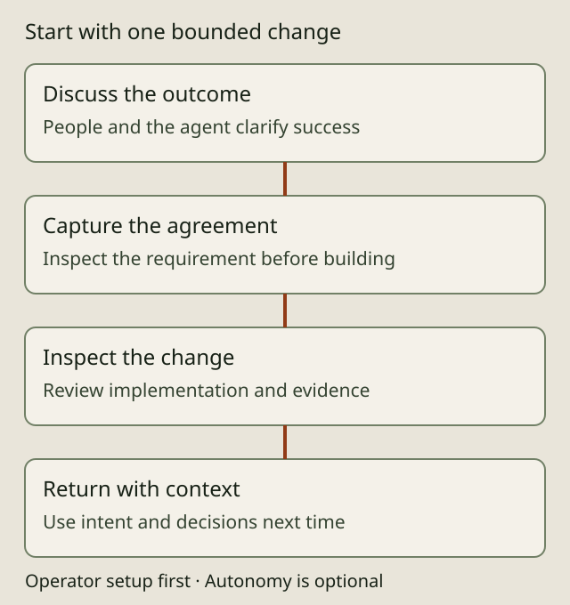

THE GOVERNED SOFTWARE FACTORY
Build as you already work

Keep working with your conversational coding agent. Explain the change, discuss tradeoffs, inspect the implementation and decide what should happen next. With AIDA configured in the project, your agent can use its CLI or MCP tools to maintain a durable record of requirements, decisions and the work that fulfills them.
The result is the system you developed and a record of its intent: why it behaves that way, what was agreed and where the implementation came from. That record helps you maintain and enhance the system and work with other people and agents.
Start with a conversation
Tell your AIDA-aware agent what you want to build. For example:
Add a way to export invoices. Before implementing it, record the agreed behavior and acceptance criteria in AIDA. Ask me about choices that affect customers.
You remain the developer. Explore alternatives, change your mind and review the result in your usual editor and pull-request workflow. The agent uses AIDA commands to read existing intent, capture agreed requirements, record decisions and connect changes to the relevant specs. You do not need to memorize requirement-mutation commands to begin.
Make the record part of the work
Ask the agent to show what it recorded before implementation. Correct missing constraints or misunderstood intent. As implementation reveals new facts, ask it to update the record and explain material changes.
At a stopping point, ask: "What intent did we capture, what did we implement, and what is still unresolved?" The capture skill can help an agent sweep the conversation for missed requirements. Capture depends on the configured agent following the project guidance and invoking the tools; AIDA does not automatically record every utterance or observe work outside those tools.
Return with context
Later, ask the agent to find the requirement or decision behind a behavior before changing it. Specs, comments, relationships and code traces provide starting points for maintenance and enhancement. A colleague can use the same project record to understand the agreed behavior and contribute a change.
The record needs care: check that acceptance criteria match the intended outcome and that the implementation and links remain current. Unrecorded decisions cannot be recovered from the store by assumption.
Choose what to delegate
You can work conversationally throughout. Autonomous delivery is an option for suitable authorized work, not a prerequisite for onboarding. People can develop, review and collaborate while agents handle tracking and selected implementation steps. Execution mode and authority are separate: selecting a mode does not grant permission to approve or merge.
Read the AIDA overview for selectable autonomy and current limitations. AIDA is alpha software and supports Linux only.
One-time operator setup
An operator installs AIDA and connects it to the coding agent. Follow the installation instructions on a supported Linux machine, then run these commands inside the intended Git repository:
aida init --help
aida initThe full footprint scaffolds project guidance and agent skills for selected profiles; --agent chooses profiles explicitly. The CLI is the default tool surface for agents with shell access. MCP registration is opt-in with --with-mcp; aida mcp-serve provides the stdio server for MCP clients. Check the client setup matrix for your harness. Agent permissions, project policy and review authority still need deliberate configuration.
Operators can follow the supported setup and storage guide.
Before creating specs in a fresh clone of an existing AIDA project, run aida init (or aida node acquire) in the clone to establish its local identity. Follow the project's onboarding guidance and preserve existing adoption/configuration choices. Operators can consult the setup reference and storage reference. The first-project walkthrough is a detailed command-oriented exercise for operators and agents; ordinary users can start with the conversational journey above.
Uninstall
Back up and publish any intent history you need before removing AIDA. Remove the binary from the location where you installed it, and remove AIDA's client registration and generated guidance only after checking for local customizations. Keep your source repository and any store history you still need. For a live dev installation, inspect aida dev status first so you identify the active links and binaries correctly.